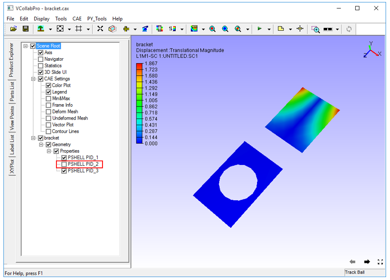

Product Explorer
Product Explorer found in the left span of the VCollab screen, lets users to explore a product model through a hierarchical set up of nodes. Using product explorer, users can,
- Hide and show a part or group of parts
- Highlight a part or group of parts
- Transform a part or group of parts
- Seek or focus a part or group of parts
- Delete a part or group of parts
- Show/hide a CAE property
Left Span of VCollab Pro Layout
The left span contains four tabs - Product Explorer, Part List, ViewPoints, Label List and XYPlot.
Product Explorer is the default active tab.

The various options available under Scene Root as seen in the Product Explorer tree are:
| Axis | Shows/Hides the axis triad at the top right corner |
| Navigator | Navigator Shows/Hides the navigator in the right part of viewer |
| Statistics | Shows/Hides graphical or rendering statistics in the bottom right corner |
| 3D Slide UI | Shows/Hides viewpoint slide UI in the bottom right corner |
Context Menu
On right clicking a node in the product explorer, the context menu appears as shown below
Show All Shows all parts independent of selection Invert Show Hides visible parts and Shows invisible parts Hide others Hides all parts except current selection Focus Sets focus on the selected part or group Select Selects the part by highlighting its bounding box AddtoSelection Adds to the selection list by highlighting parts bounding box Deselect Deselects current selection User Info Lets users add information to the part selected. Transform Allows users to apply any transformation to the group node. Not applicable for leaf node or individual part. Display Mode Applies one of the following display modes to the current selection.
Shaded Smooth shade Shaded Mesh Smooth shade with mesh Wireframe Model as edges HiddenLine Wireframe in which, hidden lines removed Point Model as points Transparent Semi-transparent Model Set Random Color Model parts with random colors Set Color Allows user to define a color to the part selected Switch Animation Switch into animation mode. Shows a part per frame as in the product tree. Click the option again to stop the animation. Rename Rename the group or part name. Delete Deletes selected part or group of parts from the scene and product tree Expand Allows user to expand the group to levels, All, Level 1, Level 2 and Level 3. Collapse Allows user to collapse the group to level, All /Level 1/ Level 2/ Level 3. Set As Current Model Allows user to set this model as Current CAE Model. Exclude Section Allows user to exclude the selected parts from cut-section.

Steps to Hide/Show a Part
Check or uncheck the option in product tree to show or hide a part respectively.
Since Object 2 is unchecked, it is hidden in the scene below.

Steps to highlight a Part
Select a part or part component in the product tree.
Right click to open the context menu

Click Select.
The part will be highlighted with bounding box.
Click other parts and add them to highlight using Add to selection in context menu.
Steps to transform a group node or group of parts in the tree
Load a CAX model that contains groups of parts.

Select any group node or group of parts
Right click and select Transform in the context menu.

Translate
Select Translate in the Transform dialog box.
Increase or decrease the X,Y,Z axes values as required.
Rotate
Select Rotate in Transform dialog box
Enter 1,0,0 or 0,1,0 or 0,0,1 for X, Y, Z to rotate about the X,Y and Z axes respectively.

Increase or decrease Angle value to rotate.
Increase Step value for a quick transform.
Scale
Select Scale in Transform dialog box
Enter scale factor in X, Y, Z text boxes to scale in X, Y, Z axes respectively.

Click Reset to reset the parts to its original position.
Steps to seek/ focus a part among groups
Select a part in the viewer

Right click and select Focus to fit the part to the view port. The focus on the part is seen as below.

Delete a part or group of parts
Select a part node or group node in product tree
Right click on the node to open the context menu
Click Delete.

There is no Undo option available for deletion. Hence a confirmation message pops up.
Click Yes to confirm
The part or group of parts are then deleted from the scene and product tree.
To delete a part instead of a group of parts, the double click context menu in the viewer can also be used
Double clicking on a part to open up the context menu in the viewer
Click Delete
A confirmation message open up. Click Yes
The part is then deleted from the scene and product tree
Users can save the remaining parts as a CAX file. Deleted parts cannot be saved in CAX.
Using CAE switch on/off properties
- Users can switch on or off any CAE property listed in the following table:
| Color Plot | Applies color plot to the Model or Removes it |
| Legend | Shows/Hides the Color Palette |
| Min & Max | Shows/Hides Min and Max values and its attached IDs in the label |
| Frame Info | Shows/Hides frame information in the bottom left corner of the viewer. |
| Deform Mesh | Applies or Removes deformation |
| Undeformed Mesh | Shows /Hides Undeformed mesh |
| Vector Plot | Shows/Hides Vector Plot |
| Contour Lines | Shows/Hides Contour Lines |
How to exclude parts from cut section clipping?
- Load a cax file
- Switch on section plane.
- Click a part name in product explore, which is clipped by section plane.
- Open context menu using right mouse click inside product explorer panel.
- Click 'Exclude Section'
- The selected part is visible now and not clipped by section plane.
- Repeat the step for other required parts.
- Click or uncheck the option 'Exclude Section' again to include the part again.
Note
- To exclude or include, this function is applied for only one selected part in the product explorer.